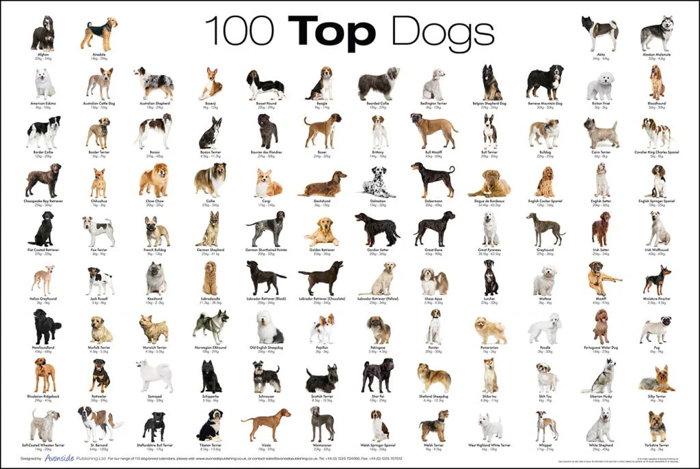
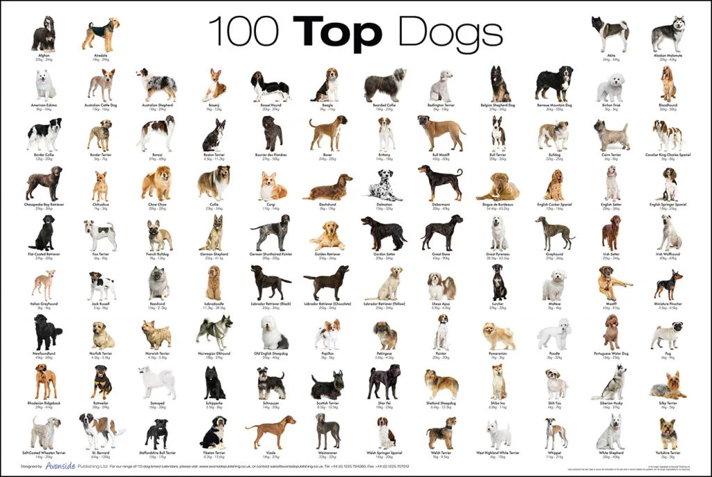

ძაღლები
ამ ვებსაიტზე გაიცნობთ ძაღლის 3 კონკრეტულ ჯიშზე. ეს ჯიშებია: ლაბრადორი, გერმანული ნაგაზი და ჰასკი. თითოეულ გვერდზე აღწერილია კონკრეტული ჯიში თავისი სურათითა და მოკლე ინფორმაცით.
ამ ვებსაიტზე გაიცნობთ ძაღლის 3 კონკრეტულ ჯიშზე. ეს ჯიშებია: ლაბრადორი, გერმანული ნაგაზი და ჰასკი. თითოეულ გვერდზე აღწერილია კონკრეტული ჯიში თავისი სურათითა და მოკლე ინფორმაცით.
